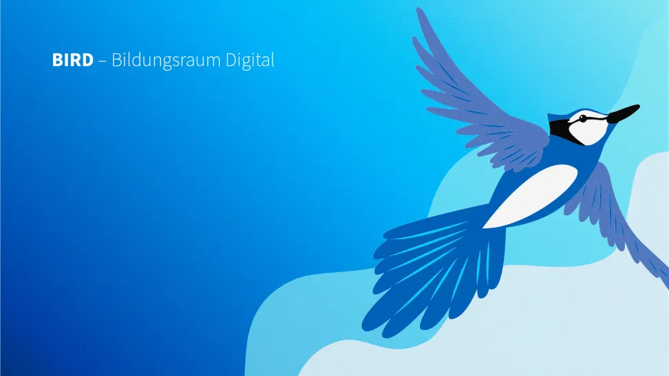
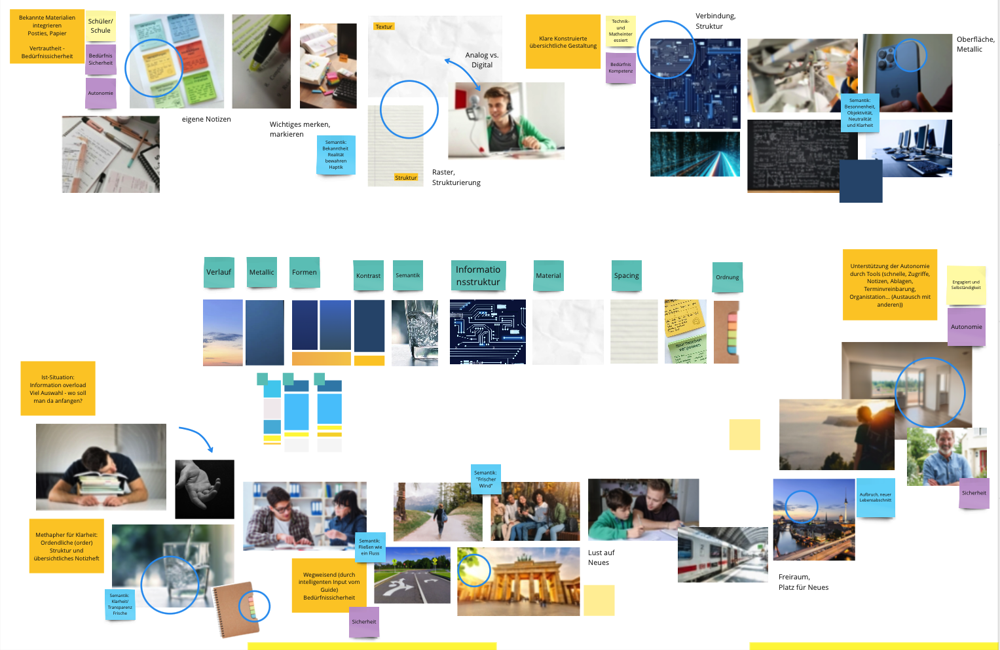
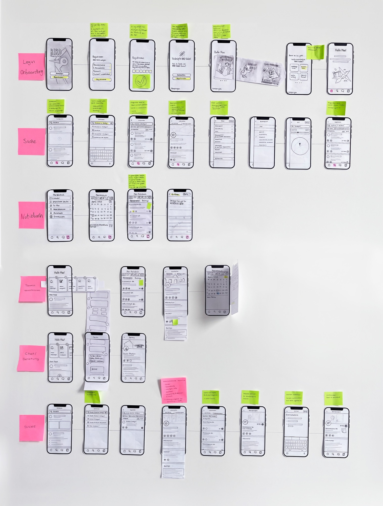
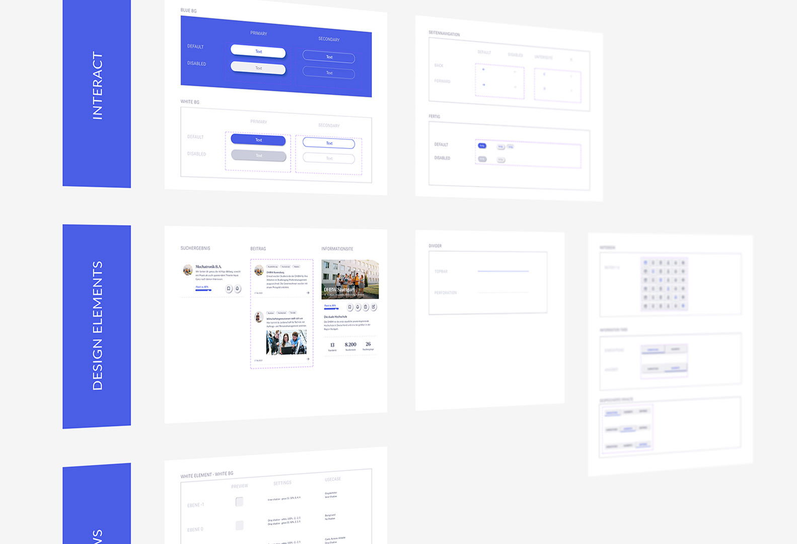
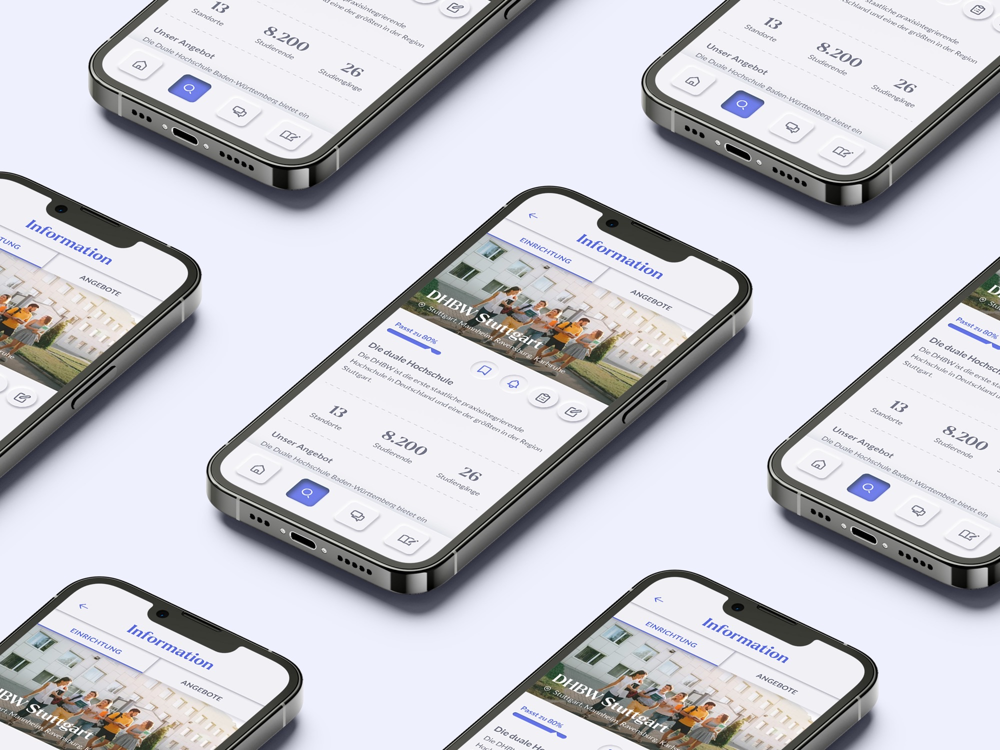
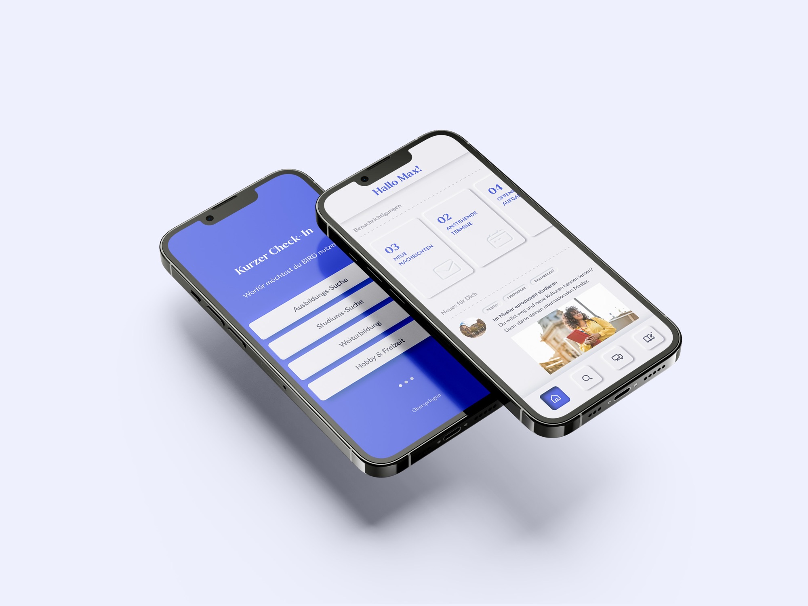

Mobile companion app for Germany's national education platform, helping students discover and navigate their options.

BIRD (Bildungsraum Digital) is Germany's federally funded platform for discovering educational programs and institutions. Its web prototype needed a mobile companion to help students find offerings, navigate them through the whole process flexibly and individually.

We mapped the journey of education seekers and identified key moments of uncertainty and overwhelm. Interviews with high school students revealed a need for personalisation and guidance: not just a search engine, but a companion that understands where you are in life.

Based on the findings, we defined the core feature set: personalised content via the BIRD Wallet, intelligent search across all programs and institutions, a personal notebook for collecting favourites and notes, and the BIRD chatbot offering real-time support.

We developed a moodboard, paper wireframes for all core flows and iterated toward high-fidelity screens. The visual language, inspired by paper and handwriting, was chosen to feel familiar and approachable for younger users while communicating quality through texture and tactility.

The interactive prototype was tested with a small group of students. Feedback confirmed the value of the personalisation layer and the chatbot, and led to refinements in the notebook and search interactions. The paper-inspired visual style was consistently well-received.

The app brings Germany's education options into one place. It offers
individual content, space for personal notes and support on the go. The
paper-inspired design adds familiarity and a hands-on-work character.
Usability tests with students praised the prototype for clarity and ease of navigation.
The concept was under further consideration as part of the national BIRD platform.

Voteasy Votecounter

Langenscheidt Language Coach

ELLA – Lifelong Learning with AI